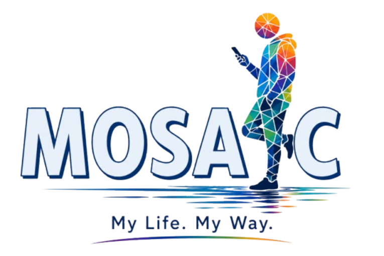
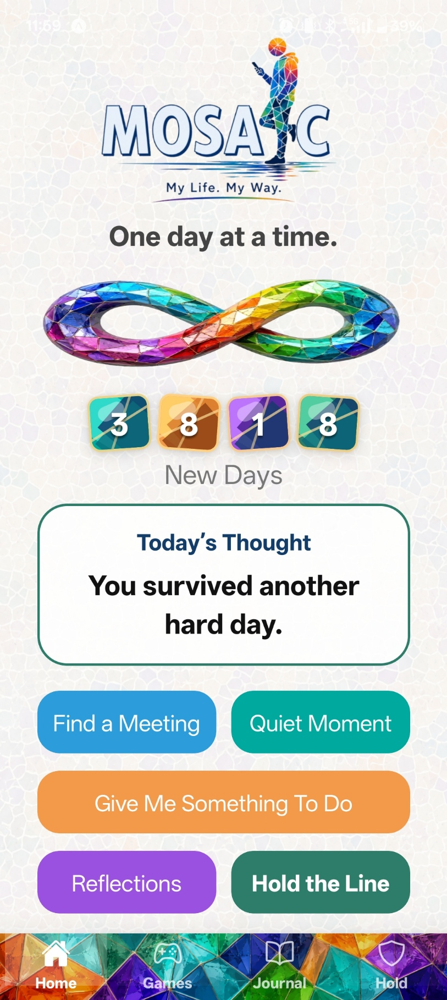

My Recovery. My Way.
Mosaic is a private recovery support app built from lived experience. It is designed for everyday encouragement, reflection, reminders, support, and moments when a person needs something simple to hold onto.
What Mosaic Helps With
Mosaic is being built to give people in recovery a private place to return to when they need encouragement, structure, reflection, or support.
- Count new days in recovery.
- Find recovery meetings and support options.
- Use Hold the Line when things feel difficult.
- Read recovery reflections.
- Journal privately.
- Save useful supports and contacts.
- Use small tools, reminders, and features in your own way.
A Note from Steve
AA officially began in 1935 after Bill W. met Dr Bob in Akron, Ohio. Its purpose is simple but powerful: one alcoholic helping another.
I can only speak from my own experience, but I would not be here today without AA.
My name is Steve Condra, and I am proud to be a recovering alcoholic.
Welcome to Mosaic. I sincerely hope you like the app.
I developed Mosaic because I wanted to help people who may find themselves in the same situation I was in. There is help out there, but there are also times when help can feel far away. The more rural you get, the harder that can be. But it is no picnic in the cities either.
I was born and raised on the north side of Dublin. I moved to County Clare in 1995, lived there for 20 years, and now live in Waterford, where Mosaic was developed. After returning to university at South East Technological University to study computer science, I entered the Student Inc. programme at the end of my first year.
This app, I hope, is your app.
What does that mean? It means I tried to design Mosaic so it can become your own personal support space. You can use the parts that help, ignore the parts that do not, and keep things private. Nothing is shared unless you choose to share it.
I built this as honestly as I could from my own experience. I included the things I wished had been there for me. Then, through the guidance of the Student Inc. programme, I spoke to professionals and people connected to recovery, and Mosaic continued to grow from there.
There is no pressure in Mosaic. That is important to me.
This app is not here to tell you off, chase you, judge you, or make you feel like you have failed because you did not open it every day. You can use it today and not look at it again for a week. You can use one part of it and ignore the rest.
It is your app, your recovery, and your choice.
I hope it helps you in some small way. Play a game. Kill a craving. Read something. Save a support. Count a new day. Use what helps.
There is more information in the Mosaic Guide, so please feel free to browse. Please send in your suggestions, because this is your app. It should work the way you want it to work, have what you want it to have, and do what you want it to do.
Thanks for reading.
Best of luck,
Steve
Current Stage
Mosaic is an early-stage recovery support project being developed through the Student Inc. entrepreneurship programme.
The project is currently focused on research, customer discovery, feedback, and prototype development.
Prototype Preview

Contact & Updates
These links are here for contact, updates, and project information.